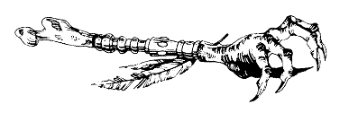

« Mais que faites-vous donc dans cette maison ? hurle-t-elle ; si vous ne partez pas de vous-même, mes chiens se chargeront de vous raccompagner. Et s'ils devaient échouer, comptez sur moi pour le faire ! » A ces mots, un panneau de bois glisse le long d'un mur, et deux GRANDS DANOIS bondissent pour vous attaquer. Préparez-vous à les combattre. Vous affronterez les chiens l'un après l'autre.
| HABILETÉ | ENDURANCE | |
| Premier GRAND DANOIS | 7 | 6 |
| Deuxième GRAND DANOIS | 6 | 6 |
Si vous êtes vainqueur, vous pouvez ou bien quitter la pièce , ou bien y rester pour l'explorer .
